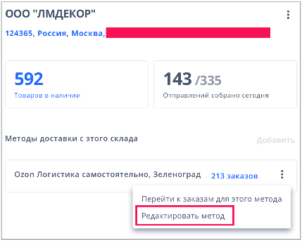

Настройка методов доставки
На FBS можно настроить только один метод доставки и использовать только
нашу службу доставки — Ozon Логистику. Собирать заказы перед доставкой
можно не дольше
24 часов.
Вы сами устанавливаете время сборки заказа и расписание работы склада. А
мы определяем сроки и стоимость доставки для вас и клиента. Покупатель
может получить заказ в пункте выдачи, постамате или курьером.
Что такое метод доставки
Метод доставки — это способ, которым вы передаёте готовые заказы Ozon
Логистике. Нужно выбрать один из двух способов отгрузки:
-
самостоятельно в пункт приёма (бесплатно) — в настройках склада
предложим доступные адреса рядом с вами;
-
курьером Ozon (платно) — если продаёте
некрупногабаритные товары, а ваш склад находится в Москве и Московской области (не дальше 30 км.
от МКАД), в Санкт-Петербурге и Ленинградской области (не дальше 25 км.
от КАД)
Мы сами определяем сроки, географию и стоимость доставки для покупателя, а
клиент решает, как получить заказ: в пункте выдачи, в постамате или
курьером.
Как настроить метод доставки
На один склад можно добавить только один метод с определенным типом
товаров. Для другого типа товара или метода — нужен
новый склад.
-
Нажмите Добавить метод доставки после того, как заполните все
настройки склада или выберите в разделе Логистика склад и
нажмите Добавить метод доставки.
-
Укажите, как будете передавать товары Ozon Логистике: самостоятельно или
курьеру Ozon (доступно только для не КГТ)
| Самостоятельно
| Курьеру Ozon
|
Можно отгружать любые разрешенные товары, кроме пиротехники.
Крупногабаритные товары, шины и автомобильные аккумуляторы можно
привозить только в определенные пункты — они выделены примечанием
Только крупногабаритный товар
-
Выберите подходящий пункт приёма из списка: в нём точки, которые
ещё не загружены, и подходят под ваши объёмы отгрузки. Перед
выбором советуем посмотреть
график работы пунктов.
При отгрузке в пункт приёма «Вязовский» товары доставляются нашим
партнёром EasyWay. География доставки отличается от Ozon Логистики
для некрупногабаритных товаров. Список городов доставки EasyWay.
-
Включите лист подбора и печать акта приёма-передачи заранее, если
нужно.
- Сохраните метод.
|
Можно отгружать любые разрешенные товары, кроме крупногабаритных,
шин и автомобильных аккумуляторов.
-
Добавьте 1-3 телефона для связи со складом и информацию для
курьера: например, как проехать к складу или какие ворота искать.
-
Установите время отгрузки — в какой период вам удобно передавать
отправления курьеру.
- Включите лист подбора, если нужно.
- Сохраните метод.
|
Как отредактировать метод доставки
<Видео>
-
Нажмите на ⋮ → Редактировать метод в строке с названием метода.

-
Измените настройки:
-
Если отгружаете курьеру Ozon, можно:
- обновить информацию для курьера;
- выбрать новое время отгрузки;
-
изменить способ отгрузки на Самостоятельно и выбрать
пункт приёма — будут доступны точки, которые ещё не загружены.
При самостоятельной отгрузке для крупногабаритных товаров
предложим те пункты, которые могут их принять;
- включить или выключить лист подбора.
-
Если отгружаете самостоятельно, можно:
-
выбрать другой пункт приёма заказов — будут доступны точки,
которые ещё не загружены и подходят под ваши объёмы отгрузки;
-
изменить способ отгрузки на Курьеру Ozon. Так можно
отгружать только некрупногабаритные товары — если у вас
крупногабаритный ассортимент, не получится перейти на этот
способ отгрузки;
-
включить или выключить лист подбора и печать акта
приёма-передачи заранее.
- Сохраните метод.
Для обновления настроек понадобится несколько часов. Следить за статусом
метода можно в разделе Логистика. Дождитесь, когда он станет Активный и только потом отгружайте
товары.